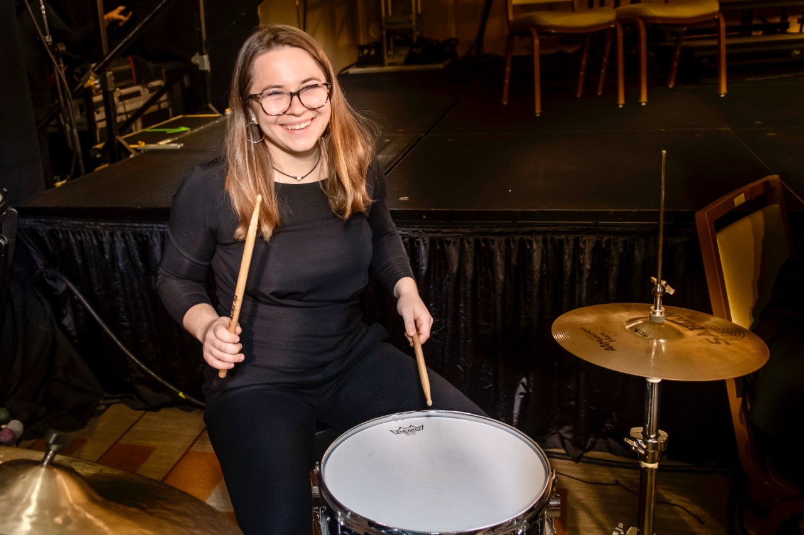
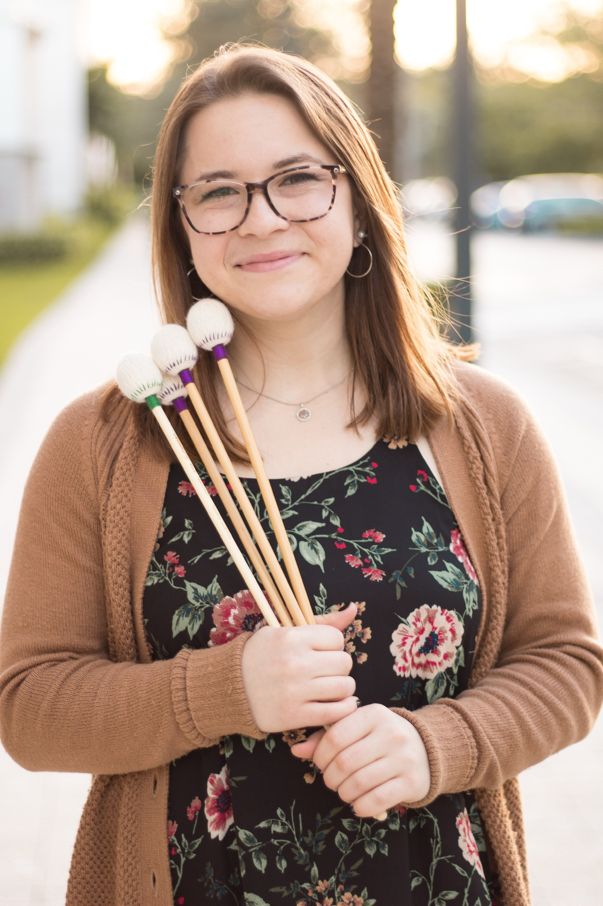

Katherine E. Fortunato
Percussionist, Educator, Composer
Contact:
k.fortunato.perc@gmail.com
(908)-642-3453
Miami, Florida

Katherine, currently a junior at the Frost School of Music at the University of Miami, has devoted the past 12 years of her life to the pursuit of percussion. Hailing from Chester, New Jersey, she began her studies at age 8 and has since explored orchestral percussion, chamber percussion, jazz drum set, and contemporary percussion. Katherine’s love for all things percussion stems from her strong foundation acquired through her studies under Kenneth Piascik and the New Jersey Youth Symphony Percussion Ensemble, which she was involved in for from 2012 to 2017. Katherine has been fortunate enough to have performed in venues such as Carnegie Hall, National Sawdust, Schonbrunn Palace, the Musikverein, Béla Bartók National Concert Hall, Wiener Konzerthaus, as well as other venues throughout Europe and America. Though Katherine has a passion for all music, she wishes to continue creating connections through chamber music in addition to working inspiring young women and other minorities in music and percussion. Katherine’s teacher’s include Svet Stoyanov, Matt Strauss, Greg Zuber, and Ken Piascik, and she currently interns for Sandbox Percussion.
Work Experience
- Private Teacher (2014 - )
- Composer (2017 - )
- Performer- Classical Percussion, Jazz Drum Set, Jazz Vibraphone (2014 - )
- Intern for Sandbox Percussion Quartet (2019 - )

| Classical |
Jazz |
| Percussion (all) |
Drum set |
| Timpani |
Vibraphone |